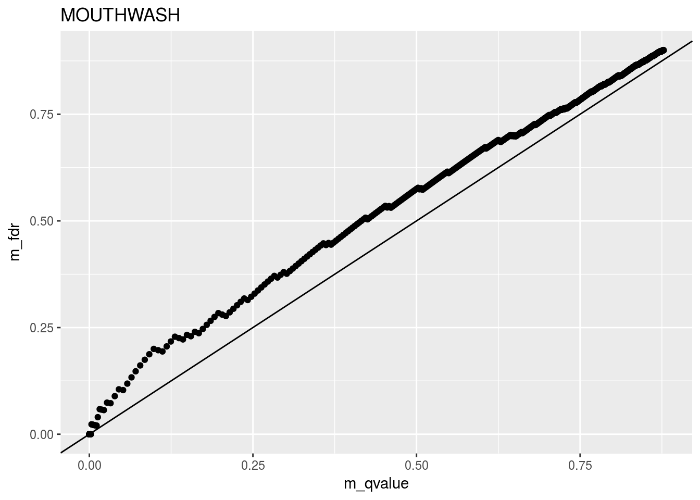
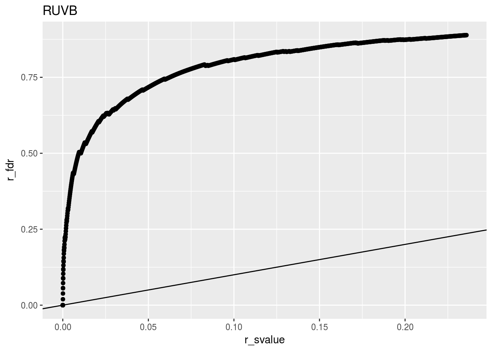
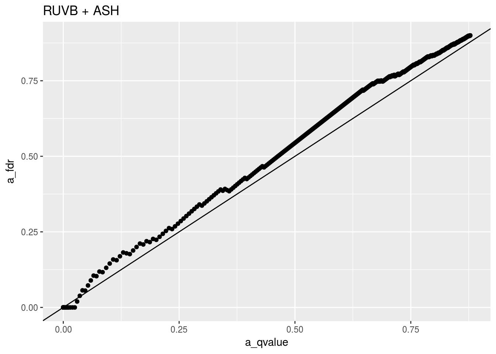

This is meant just to look at a few datasets to see if RUVB tentatively calculates good lfsr’s. RUVB doesn’t return good lfsr’s but MOUTHWASH does. Running ASH on RUVB is competitive with MOUTHWASH.
Generate Poisson-thinned data under the simulation settings used in paper.
source("../code/data_generators.R")
args <- list()
args$nullpi <- 0.9
args$Nsamp <- 10
args$ncontrol <- 100
args$poisthin <- TRUE
args$log2foldsd <- 0.8
args$tissue <- "muscle"
args$path <- "../output/gtex_tissue_gene_reads_v6p/"
args$Ngene <- 1000
args$skip_gene <- 0
args$log2foldmean <- 0
set.seed(723)
d_out <- datamaker_counts_only(args)
which_null <- d_out$meta$null
control_genes <- as.logical(which_null)
nnull <- sum(control_genes)
control_genes[control_genes][sample(1:nnull, size = nnull - args$ncontrol)] <- FALSE
beta_true <- rep(0, length = args$Ngene)
beta_true[!which_null] <- d_out$meta$true_log2foldchange
X <- as.matrix(model.matrix(~d_out$input$condition))
colnames(X) <- c("Intercept", "Treatment")
Y <- t(log2(as.matrix(d_out$input$counts + 1)))
num_sv <- max(sva::num.sv(t(Y), mod = X, method = "be"), 1)Fit RUVB
library(vicar)##
## Attaching package: 'vicar'## The following object is masked _by_ '.GlobalEnv':
##
## rmixnormlibrary(ggplot2)
ruvbout <- ruvb(Y = Y, X = X, ctl = control_genes, k = num_sv,
fa_args = list(use_code = "r", nsamp = 10000, display_progress = FALSE),
cov_of_interest = 2)
mout <- mouthwash(Y = Y, X = X, k = num_sv, cov_of_interest = 2)
morder <- order(mout$result$qvalue)
m_fdr <- cumsum(which_null[morder]) / (1:length(which_null))
m_qvalue_sorted <- mout$result$qvalue[morder]
mdat <- data.frame(m_fdr, m_qvalue = m_qvalue_sorted)
ggplot(data = mdat, mapping = aes(x = m_qvalue, y = m_fdr)) +
geom_point() +
geom_abline(slope = 1, intercept = 0) +
ggtitle("MOUTHWASH")
rorder <- order(ruvbout$lfsr2, na.last = NA)
r_fdr <- cumsum(which_null[rorder]) / (1:sum(!is.na(ruvbout$lfsr2)))
r_svalue_sorted <- ruvbout$svalues2[rorder]
rdat <- data.frame(r_fdr, r_svalue = r_svalue_sorted)
ggplot(data = rdat, mapping = aes(x = r_svalue, y = r_fdr)) +
geom_point() +
geom_abline(slope = 1, intercept = 0) +
ggtitle("RUVB")
MOUTHWASH does awesome, RUVB does not do well. Now run ASH on RUVB.
aout <- ashr::ash(betahat = c(ruvbout$means), sebetahat = c(ruvbout$sd))
alfdr <- ashr::get_lfdr(aout)
aorder <- order(alfdr)
a_fdr <- cumsum(which_null[aorder]) / 1:length(aorder)
a_qvalue <- ashr::get_qvalue(aout)[aorder]
adat <- data.frame(a_fdr, a_qvalue)
ggplot(data = adat, mapping = aes(x = a_qvalue, y = a_fdr)) +
geom_point() +
geom_abline(slope = 1, intercept = 0) +
ggtitle("RUVB + ASH")
RUVB does really well.
sessionInfo()## R version 3.3.2 (2016-10-31)
## Platform: x86_64-pc-linux-gnu (64-bit)
## Running under: Ubuntu 14.04.5 LTS
##
## locale:
## [1] LC_CTYPE=en_US.UTF-8 LC_NUMERIC=C
## [3] LC_TIME=en_US.UTF-8 LC_COLLATE=en_US.UTF-8
## [5] LC_MONETARY=en_US.UTF-8 LC_MESSAGES=en_US.UTF-8
## [7] LC_PAPER=en_US.UTF-8 LC_NAME=C
## [9] LC_ADDRESS=C LC_TELEPHONE=C
## [11] LC_MEASUREMENT=en_US.UTF-8 LC_IDENTIFICATION=C
##
## attached base packages:
## [1] stats graphics grDevices utils datasets methods base
##
## other attached packages:
## [1] ggplot2_2.2.1 vicar_0.1.6
##
## loaded via a namespace (and not attached):
## [1] Rcpp_0.12.9 plyr_1.8.4 iterators_1.0.8
## [4] tools_3.3.2 digest_0.6.11 tibble_1.2
## [7] annotate_1.48.0 evaluate_0.10 RSQLite_1.1-1
## [10] memoise_1.0.0 nlme_3.1-129 gtable_0.2.0
## [13] lattice_0.20-34 mgcv_1.8-16 foreach_1.4.3
## [16] Matrix_1.2-7.1 DBI_0.5-1 yaml_2.1.14
## [19] parallel_3.3.2 genefilter_1.52.1 stringr_1.1.0
## [22] knitr_1.15.1 REBayes_0.73 S4Vectors_0.8.11
## [25] IRanges_2.4.8 stats4_3.3.2 rprojroot_1.1
## [28] grid_3.3.2 Biobase_2.30.0 AnnotationDbi_1.32.3
## [31] XML_3.98-1.5 survival_2.40-1 rmarkdown_1.3
## [34] limma_3.26.9 sva_3.18.0 ashr_2.0.5
## [37] magrittr_1.5 MASS_7.3-45 codetools_0.2-15
## [40] backports_1.0.4 scales_0.4.1 htmltools_0.3.5
## [43] BiocGenerics_0.16.1 splines_3.3.2 assertthat_0.1
## [46] colorspace_1.3-2 xtable_1.8-2 labeling_0.3
## [49] stringi_1.1.2 Rmosek_7.1.3 pscl_1.4.9
## [52] doParallel_1.0.10 lazyeval_0.2.0 munsell_0.4.3
## [55] truncnorm_1.0-7 SQUAREM_2016.8-2This site was created with R Markdown